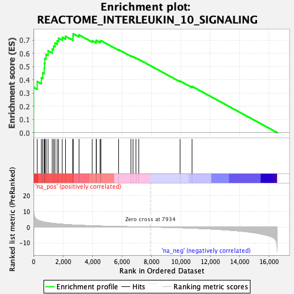
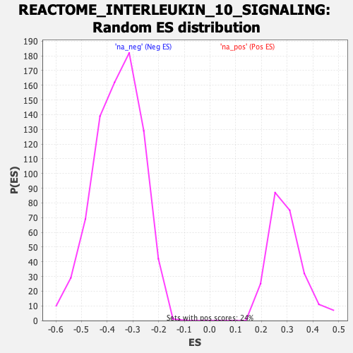

| | | Dataset | DE_genes2 |
| Phenotype | NoPhenotypeAvailable |
| Upregulated in class | na_pos |
| GeneSet | REACTOME_INTERLEUKIN_10_SIGNALING |
| Enrichment Score (ES) | 0.74810344 |
| Normalized Enrichment Score (NES) | 2.530038 |
| Nominal p-value | 0.0 |
| FDR q-value | 0.0 |
| FWER p-Value | 0.0 |
Table: GSEA Results Summary

Fig 1: Enrichment plot: REACTOME_INTERLEUKIN_10_SIGNALING
Profile of the Running ES Score & Positions of GeneSet Members on the Rank Ordered List
| PROBE | GENE SYMBOL | GENE_TITLE | RANK IN GENE LIST | RANK METRIC SCORE | RUNNING ES | CORE ENRICHMENT | | 1 | CCL5 | | | 5 | 15.806 | 0.1983 | Yes |
| 2 | CSF2 | | | 8 | 11.489 | 0.3425 | Yes |
| 3 | CSF3 | | | 250 | 4.664 | 0.3865 | Yes |
| 4 | IL10RB | | | 530 | 3.638 | 0.4153 | Yes |
| 5 | CXCL10 | | | 623 | 3.364 | 0.4520 | Yes |
| 6 | LIF | | | 724 | 3.157 | 0.4856 | Yes |
| 7 | JAK1 | | | 746 | 3.121 | 0.5235 | Yes |
| 8 | CXCL2 | | | 773 | 3.082 | 0.5607 | Yes |
| 9 | ICAM1 | | | 852 | 2.937 | 0.5929 | Yes |
| 10 | IL1B | | | 989 | 2.750 | 0.6192 | Yes |
| 11 | CXCL1 | | | 1270 | 2.390 | 0.6322 | Yes |
| 12 | CXCL8 | | | 1367 | 2.297 | 0.6553 | Yes |
| 13 | TYK2 | | | 1454 | 2.221 | 0.6780 | Yes |
| 14 | PTGS2 | | | 1604 | 2.084 | 0.6951 | Yes |
| 15 | IL1R2 | | | 1700 | 1.991 | 0.7144 | Yes |
| 16 | CCL20 | | | 1950 | 1.792 | 0.7218 | Yes |
| 17 | CCL2 | | | 2172 | 1.637 | 0.7290 | Yes |
| 18 | STAT3 | | | 2673 | 1.352 | 0.7156 | Yes |
| 19 | CCL22 | | | 2678 | 1.350 | 0.7324 | Yes |
| 20 | IL1R1 | | | 2697 | 1.339 | 0.7481 | Yes |
| 21 | PTAFR | | | 3088 | 1.160 | 0.7390 | No |
| 22 | CCL19 | | | 3986 | 0.841 | 0.6952 | No |
| 23 | TNFRSF1A | | | 4256 | 0.762 | 0.6885 | No |
| 24 | TNFRSF1B | | | 4262 | 0.761 | 0.6978 | No |
| 25 | IL1RN | | | 4515 | 0.689 | 0.6911 | No |
| 26 | IL18 | | | 4577 | 0.667 | 0.6958 | No |
| 27 | IL1A | | | 5772 | 0.390 | 0.6284 | No |
| 28 | FPR1 | | | 6612 | 0.221 | 0.5803 | No |
| 29 | CD86 | | | 6752 | 0.193 | 0.5743 | No |
| 30 | TIMP1 | | | 6949 | 0.163 | 0.5645 | No |
| 31 | CSF1 | | | 7141 | 0.127 | 0.5545 | No |
| 32 | IL6 | | | 9946 | -0.445 | 0.3901 | No |
| 33 | IL12A | | | 10759 | -0.711 | 0.3498 | No |
Table: GSEA details [plain text format]

Fig 2: REACTOME_INTERLEUKIN_10_SIGNALING: Random ES distribution
Gene set null distribution of ES for REACTOME_INTERLEUKIN_10_SIGNALING